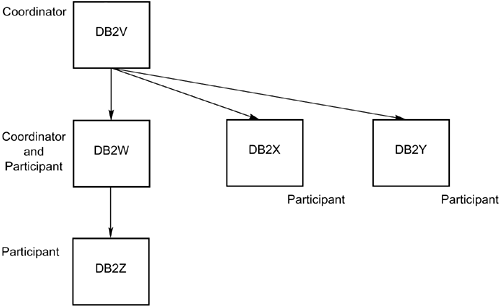

|
|
< Day Day Up > |
|
Two-Phase CommitDistributed two-phase commit enables application programs to update data in multiple RDBMSs within a single unit of work. The two-phase commit process coordinates the commits across the multiple platforms. The two-phase commit provides a consistent outcome, guaranteeing the integrity of the data across platforms, regardless of communication or system failures. Two-Phase Commit TerminologyA syncpoint tree is built by the coordinator of a unit of work. The syncpoint tree determines which process is in control of the commit/abort decision. Each node in the syncpoint tree is the coordinator of its own resources and of the nodes below it on the syncpoint tree. Additionally, a node is a participant of the node directly above it in the syncpoint tree. Figure 42.1 shows an example of a syncpoint tree. In this example, DB2V is the coordinator for DB2W, DB2X, and DB2Y. In addition, DB2W is the coordinator for DB2Z. Figure 42.1. A two-phase commit syncpoint tree. Keep these terms in mind as I discuss the two-phase commit process in this chapter. What Are the Two Phases?The two phases in the two-phase commit process are
The first phase is the preparation phase. Each participant in the two-phase commit process is informed to get ready to commit. The preparation phase uses the presumed abort protocol. All affected modifications at all locations within the unit of work therefore are rolled back if an error is encountered. Each participant informs the coordinator when it has successfully written the appropriate log records and is therefore ready to commit (or roll back) all changes. Usually, this process is followed by a commit. However, if any participant fails to commit, the coordinator may need to back out all changes for all participants. During phase 1, each participant returns a "vote" on whether commit can proceed. Each participant returns one of the following votes:
If all votes are READ-ONLY, a COMMIT is not necessary because no updates were performed. If all the votes are YES and READ-ONLY, the COMMIT can be processed. If any vote is NO, the unit of work is rolled back. After all the participants are ready to commit, phase 1 is complete. Therefore, the second phase—the actual commit—is initiated. During phase 2, success is presumed, even in the case of system failure. Because all participants have elected to continue the commit, success can be presumed with no danger of data integrity violations. The actual commit phase is implemented as a series of communications between the coordinator and its subordinate participants. The coordinator specifies that each participant that voted YES is free to permanently record the changed data and release all held locks. When the participant successfully completes this work, it responds back to the coordinator indicating that it has successfully committed the unit of work. The coordinator then logs that the participant has successfully committed. Additionally, a process called resynchronization occurs during phase 2. Resynchronization resolves in-doubt logical units of work. An in-doubt logical unit of work has passed phase 1 but has not passed phase 2. This situation is typically caused by communication failures. When a communication failure occurs causing in-doubt LUWs, locks may be held, causing system timeouts and deadlocks. For this reason, waiting for the automatic DB2 resynchronization may not be feasible. Therefore, you also can initiate resynchronization manually. You do so by using the RECOVER INDOUBT command, as in this example: RECOVER INDOUBT ACTION(COMMIT) ID(1031) This command schedules a commit for the threads identified by the correlation ID of 1031. The ACTION parameter can be either COMMIT or ABORT. The decision whether to commit or abort must be made by the analyst issuing the RECOVER. For this reason, manual resynchronization should be initiated only when absolutely necessary. Automatic DB2 resynchronization is generally more efficient and accurate. When resynchronization is complete for all the two-phase commit participants, the two-phase commit is complete. Multi-Site UpdatingThe presence of the two-phase commit process within DB2 enables multi-site updating capability. The two-phase commit occurs when data at more than one remote location is modified (INSERT, UPDATE, and/or DELETE). The two-phase commit process ensures that data at all remote locations is consistent and recoverable. A multi-site update is possible, regardless of how you attach to DB2:
One-Phase or Two-Phase CommitTwo-phase commit is optional. However, if you need to implement applications that perform multi-site updates within a single unit of work, two-phase commit is mandatory. The SYNCLVL=SYNCPT parameter must be specified on the VTAM APPL definition statement to configure DB2's communication support for two-phase commit. Distributed Thread SupportSuccessive versions of DB2 have provided enhanced thread support specifically to increase the performance and functionality of distributed applications. Inactive DBATSTo optimize performance of distributed processing, DB2 inactivates database access threads (DBATs) as needed instead of disconnecting them. Without this capability, each thread would have to repeatedly connect, process, and then disconnect. This would generate a significant amount of overhead. A DBAT becomes inactive when all the following are true:
Inactive DBATs become active when they receive a message from VTAM. When the remote application shuts down, the thread is disconnected. Keep in mind that the existence of inactive threads may cause the number of concurrent DB2 threads to increase substantially. The overall maximum number of concurrent threads (MAXDBAT + CONDBAT) can be 25,000, of which only 2,000 (CTHREAD + MAXDBAT) can be active. Refer to Table 42.2 for a synopsis of the affected DSNZPARMs.
Database Connection PoolingDB2 V6 added support for database connection pooling. In prior DB2 releases, when an application requester established a connection to DB2, a connection to the DB2 database was also established. For V6 and later releases, DB2 maintains a pool of database connections that can be reused to process requests from DRDA application requesters. The connection pool enables DB2 to support up to 150,000 DRDA connections to DB2. The connections in the pool are DBATs, referred to as type 2 inactive threads. DB2 supports two types of inactive threads—type 1 and type 2. Type 2 inactive threads are only available for DRDA connections and use less storage than type 1 inactive threads. Type 2 inactive threads use a pool of DBATs that can be switched among connections as needed. If you have a requirement to support more inbound remote connections than you have database access threads, you should consider using DDF inactive thread support. The following sections provide information on inactive thread support. DB2 favors making inactive threads type 2. However, certain scenarios prohibit type 2 inactive threads. After a COMMIT or ROLLBACK, DB2 determines whether a thread can become inactive, and, if it can, whether it can become a type 1 or type 2 inactive thread. Refer to Table 42.3 for a breakdown of when inactive threads can be type 2 or not.
When a "Yes" is listed for a condition in Table 42.3, the thread can become inactive as the indicated type of inactive thread when a COMMIT is issued. After a ROLLBACK, a thread can become inactive, even if it had open cursors defined WITH HOLD or a held LOB locator because ROLLBACK closes all cursors and LOB locators. If a thread is eligible to become a type 2 inactive thread, the thread is made inactive and the DBAT is eligible to be used by another connection. If the thread must become a type 1 inactive thread, DB2 first determines that the number of inactive threads will not exceed the installation limit set in DSNZPARMs. If the limit is not exceeded, the thread becomes inactive; if the limit would be exceeded, the thread remains active. If too many active threads exist, DB2 may terminate the thread and its connection. |
|
|
< Day Day Up > |
|